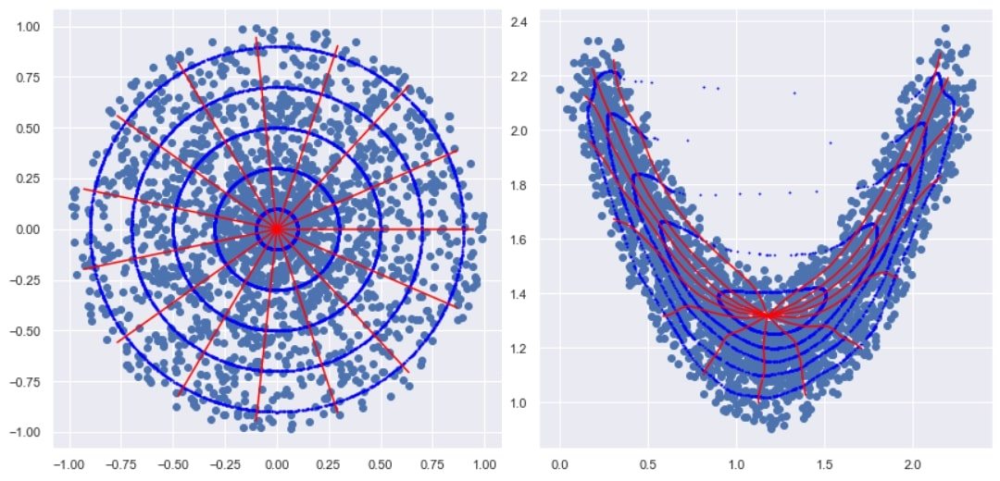
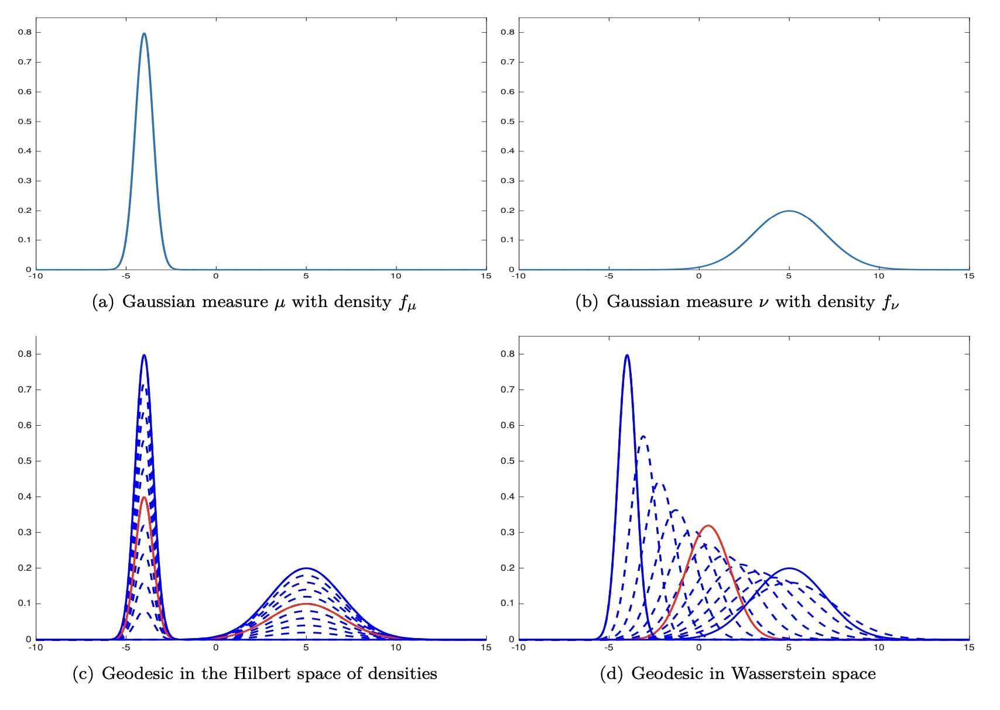
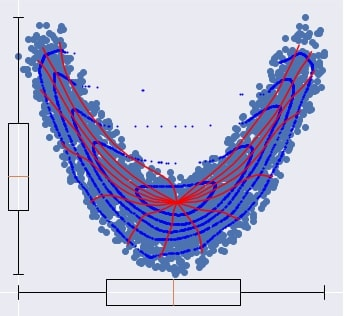
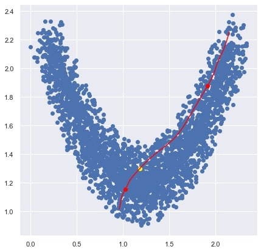

1. Les quantiles de Monge-Kantorovich
1.1. Premiers concepts.
L'idée générale des quantiles de MK est de se ramener à des quantiles de référence sur une loi connue. En particulier, le transport d'une loi de référence vers une distribution quelconque permet de caractériser cette distribution et d'ordonner des observations à la manière d'une profondeur statistique.
Il est important de remarquer que, en dimension 1, la fonction quantile se trouve être une carte de transport optimal, ce qui fait de cette définition une généralisation du cas univarié, voir la section B.3 de Hallin et al. (2021).
La figure suivante illustre l'idée du transport d'un ordre statistique connu sur une loi de référence (à gauche) vers une distribution quelconque (à droite). Les rayons (en rouge) et les cercles (en bleu) sont transportés sur la distribution de droite par une carte de transport optimal.
Via le transport inverse, (de droite à gauche), on peut ordonner les points de la loi en forme de banane du centre vers l'extérieur, ce qui donne d'ailleurs son nom à nos quantiles multivariés pour ce choix de référence : on parle alors de quantiles center-outward.
Cette loi de référence, notée Ud , est définie comme le produit de deux variables aléatoires indépendantes, R et V , respectivement tirés de manière uniforme entre 0 et 1 sur la sphère unité. Ses échantillons sont ordonnés de l'origine vers l'extérieur puisque la probabilité qu'une observation RV tombe dans une boule de rayon a est exactement égale à a . Ainsi, les boules concentriques forment naturellement de bons candidats pour des régions quantiles multivariées.
Les contours quantiles de la loi en forme de banane sont alors les images par la fonction quantile de Monge-Kantorovich des sphères de rayon a , et délimitent des ensembles de probabilité a adaptés à la géométrie du nuage de points, grâce à la formule de changement de variable pour une carte de transport.
Définition : La fonction quantile center-outward d'une loi quelconque P est définie comme l'unique, presque sûrement, fonction transportant Ud vers P avec la régularité d'être le gradient d'une fonction convexe.
Être le gradient d'une fonction convexe s'interprète comme une généralisation de la monotonie au cadre multivarié, ce qui fait sens pour une fonction quantile.
1.2. Estimation.
Lorsque la loi de référence est de carré intégrable et lorsque P est approchée par une mesure empirique Pn , un estimateur naturel de la fonction quantile de Monge-Kantorovich est l'estimateur plug-in : la fonction quantile MK de Pn . D'après le théorème de Brenier (1991), cette unique carte de transport est solution du problème de transport optimal de Monge entre la loi continue Ud et la loi discrète Pn .
Ainsi, l'estimation des quantiles center-outward nécessite de résoudre un problème de transport optimal. Notamment, cet estimateur plug-in converge uniformément sur tout compact inclus dans le support de Ud , voir le théorème 3.1 de Chernozhukov et al. (2017) ou le théorème 4.1 de Ghosal et Sen (2021).
2. Le rôle de la fonction quantile univariée.
Lorsque des données réelles sont ordonnées de la plus petite valeur à la plus grande, le quantile de niveau a est la première valeur qui dépasse la proportion a des données. En particulier, cela permet de construire une boîte à moustaches.

Curieusement, cette fonction quantile est liée de près à la théorie du transport optimal. Pour simuler des variables aléatoires, la méthode de la transformée inverse utilise le fait que, si U est tirée uniformément sur [0,1] et si X admet Q comme fonction quantile, alors X et Q(U) ont même loi. Mieux encore, cette carte de transport est optimale au regard du transport optimal quadratique : c'est l'unique carte de transport qui soit aussi une dérivée d'une fonction convexe. Cette unicité permet d'affirmer que la fonction quantile caractérise la loi, puisque deux lois de même fonction quantile doivent être identiques.
Pour illustrer la place centrale de la fonction quantile univariée, voici une figure issue de Bigot, (2020).
On peut définir des géodésiques (plus courts chemins) entre distributions de probabilité univariées par le biais des densités, ou par le biais des fonctions quantiles. L'un ou l'autre revient à considérer une certaine distance dans l'espace des lois de probabilité, et le choix de la fonction quantile correspond à la distance de Wasserstein , dont l'usage en statistiques est grandissant. Les courbes rouges correspondent à une loi intermédiaire entre les deux lois normales, où le sens du mot intermédiaire dépend de la distance considérée. D'un côté, il y a un mélange, de l'autre, on retrouve une loi normale. Pour aller plus loin sur ces questions de distance entre lois de probabilités, les notes de cours de Lénaïc Chizat sont disponibles en ligne
.3. Une boîte à moustaches multivariée.
Par définition de la fonction quantile center-outward, elle caractérise la loi de probabilité. Allant de pair avec la boîte à moustaches, les rangs univariés sont au fondement de nombreuses applications. En particulier, des tests statistiques sont étendus au cadre multivarié dans plusieurs travaux récents sur les quantiles center-outward, dont Ghosal & Sen (2021) ou Hallin et al. (2021).
Les graphes descriptifs qui incluent les images des rayons et des contours quantiles de Ud fournissent une sorte de squelette de n'importe quelle distribution, sans avoir besoin d'aucun modèle statistique. Bien sûr, ces graphes, bien que valables pour n'importe quelle dimension, ne peuvent plus être tracés lorsque la dimension dépasse 2. Pour autant, l'usage, hors visualisation, des quantiles reste simple et garde la même interprétation. Attardons nous alors un peu sur ces graphes pour comprendre comment les quantiles center-outward généralisent la boîte à moustaches.

Les boîtes à moustaches univariées sont représentées pour chaque composante du vecteur aléatoire. À la fois pour les abscisses et pour les ordonnées, il y a 50% de chance de tomber entre le 1er quartile et le 2e quartile (les bords de chaque boîte).
Par ailleurs, les contours emboîtés délimitent des régions dont la probabilité est quantifiée, respectivement 0.1, 0.3, 0.5, 0.7 et 0.9. Autour du point médian, qui se trouve à l'intersection de toutes les courbes rouges, on est ainsi capable de déterminer une région où 50% des données vont être simulées, et ce d'une manière qui fait sens au regard de la géométrie du nuage de points. Ceci permet de faire le pont entre le concept de boîte à moustaches et les graphiques descriptifs.
NB : le positionnement relatif des médianes et du point médian est plutôt similaire, ce qui n'est pas un hasard. Naturellement, le point médian est capable de capter les symétries du nuage de point. Ceci est bien illustré pour la loi en forme de banane, puisque l'abscisse du point médian coincide avec la médiane des abscisses des points (boxplot du bas).
Sur le rôle des courbes de signe.
Les courbes de signe sont les images de rayons de la boule unité par la fonction quantile center-outward. Afin de donner de l'intuition, regardons d'un autre oeil la construction de la figure précédente, en passant par les courbes de signe.
Disons que 100 observations sont relevées sur une ligne droite. Construire une boîte à moustaches, c'est suivre cette ligne en numérotant les observations. Entre la 25e et la 75e, il y a 50% des données, et l'observation centrale est la 50e.
Supposons maintenant que cette ligne droite soit en fait une courbe. Rien n'empêche de refaire la même opération pour délimiter 50% des données, et obtenir une sorte de boxplot incurvé. La figure suivante représente ceci sur une courbe de signe liée à la loi en forme de banane. On fait le raccourci de désigner par courbe de signe l'image d'un diamètre par la fonction quantile center-outward. Sur une telle courbe de signe, on peut relever des données issues du nuage de points, a.k.a. la loi multivariée.

Ici, le point jaune est une médiane univariée (sur la ligne courbée) et les points rouges délimitent 50% des observations tirées le long de cette courbe. On peut alors répéter l'opération pour autant de courbes de signe que l'on souhaite. L'ensemble des points rouges ainsi obtenus formera le contour quantile center-outward d'ordre 50%, et l'union des points jaunes, qui s'avère être en dimension 2 un singleton, cf Hallin et al. (2021), généralise une médiane multivariée. Ce point de vue sur les concepts de quantiles de Monge-Kantorovich permet de se représenter l'aspect naturel de cette définition, ainsi que le rôle central des courbes de signe.
4. Conclusion.
Ces notions de quantiles multivariés appellent à être appliquées dans tous les domaines des statistiques où la fonction quantile univariée intervient. D'une part, les articles fondateurs de ces notions de quantiles multivariées, Chernozhukov et al. (2017) et Hallin et al. (2021), ont montré que cette fonction quantile bénéficie des mêmes propriétés qui font de la fonction quantile univariée un bon outil d'inférence sur la droite réelle. D'autre part, ces définitions naturelles permettent d'imaginer des applications intuitivement, avec la même interprétation qu'en dimension 1. Pour aller plus loin, voir Hallin, (Mars 2022), qui est une review récente de différentes applications de ces concepts.